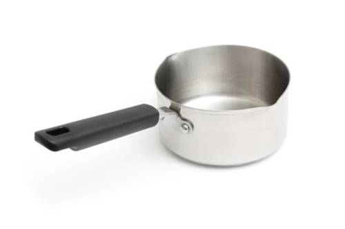
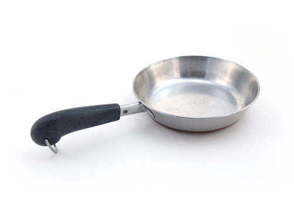
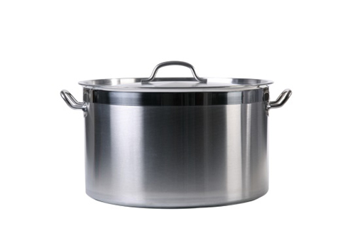
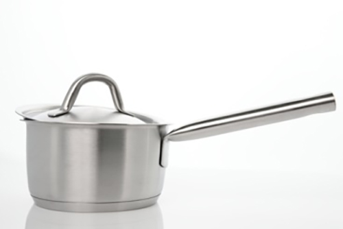

Explain the boiling process and state the correct temperature at which water will boil at sea level.
Enter your answers in the textbox below then check by clicking 'REVEAL'
Add another answer
Now check your answers above to the correct answers below.
Boiling is the process of heating liquid to the temperature at which it will begin to transform into a gaseous state, which is 100°C when water is boiled at sea level.
QUESTION 2
Explain why water boils at a different temperature above sea level.
Enter your answers in the textbox below then check by clicking 'REVEAL'
Add another answer
Now check your answers above to the correct answers below.
Water will boil more quickly at higher altitudes where the air pressure is lower, as it takes less energy. This means water will boil at a lower temperature.
QUESTION 3
Describe the differences in boiling dried pasta, stuffed pasta and fresh pasta.
Enter your answers in the textbox below then check by clicking 'REVEAL'
Add another answer
Now check your answers above to the correct answers below.
Dried pasta will take longer to cook than fresh pasta, and cooking times will depend on the size,
shape and thickness of the pasta. Bring the water to a full boil. Add all the pasta and stir
immediately to prevent the pasta from sticking together.
Stuffed pasta, such as ravioli, should be cooked more gently than most other pastas to prevent
the stuffed pasta from splitting apart. Keep the water at a gentle boil while the pasta is cooking.
Fresh pasta and homemade pasta take a lot less time to cook than dried pasta. Some types can be
done in less than 30 seconds after the pasta comes back to a full boil.
QUESTION 3
Look at the pictures below, and decide which piece of equipment is most suitable for boiling a 5kg piece of gammon. Explain why you have selected that piece of equipment.
Enter your answers in the textbox below then check by clicking 'REVEAL'
1
2


3
4


Add another answer
Now check your answers above to the correct answers below.
A large pan is required to cook a joint of gammon this size. When boiling food, it is important that you use sufficient water for the product to be fully submerged. The pan should be just large enough for the liquid to cover the food and move freely around it. There should not be too much liquid compared to the size of the product being boiled. Overfilling the pan will mean it takes long for the water (and the food) to heat up to cooking temperature.